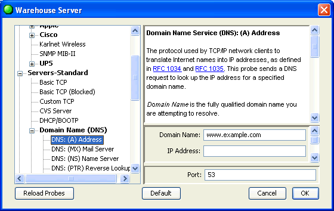

The Description section of a probe file contains text that will be displayed as a description of the probe in the Probe Configuration window. It is defined using the following tags:
<description> ... </description>
A sample is shown below. The description can be marked up with bold, italic, plain text. Underlined text becomes a link to an external URL, as described below.

The Set Probe window, showing the description field. Note that the blue underlined links are actually links to the relevant RFC specifications.
The description section is delimited by <description> and </description> tags. The entire text between those tags is placed into the probe configuration window.
You can apply text styles to the description text using markup commands bracketed by backslash ("\") characters. There may be many markup commands between a pair of \...\ characters. The Example Probe File shows a sample description section.
Historical note: Prior to InterMapper 4.0, the markup characters were « and » (≤ and ≥). InterMapper still accepts these characters, although we encourage everyone to use the \...\ in new probe files as they're easier to type and will pass unchanged through all mail systems.
The following description text is rendered as shown:
\b\Bold \i\Bold Italic \!b\Italic \p\Plain |
Bold Bold Italic Italic Plain |
\M1++\Big red monospace\p\ |
Big red monospace |
\2U\http://www.example.com\p0\ |
http://www.example.com |
\2U=http://www.example.com\Text Link\p0\ |
Text Link |
The last two examples above shows the script code required to create a link. In both example, "\2U\" means "set the color to blue, underline the text."
Special Cases: